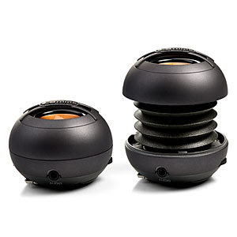
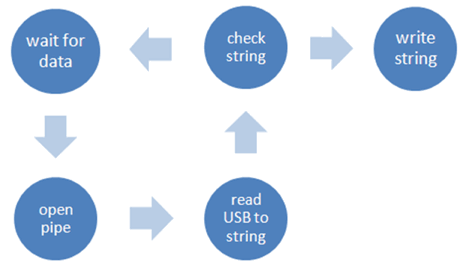
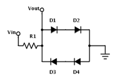
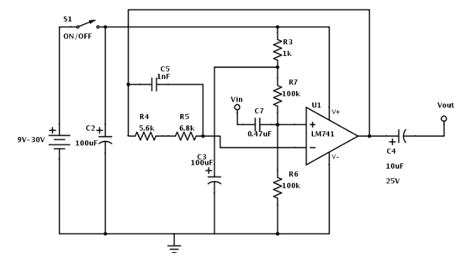
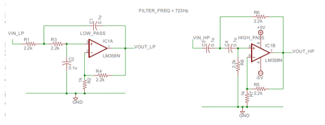
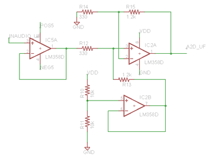
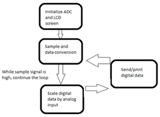
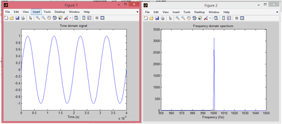

There is an effort in the College of Engineering to
improve the freshman engineering course (EE 10111-10112)
and make the course more interesting and educational. One
of the problems relevant to EE senior design is that there
is not an adequate introduction to the fun side of
electrical engineering that teaches fundamental concepts of
what electrical engineers do.
Our goal is to create an engaging module for the freshman
engineering course representative of the different
applications of EE in the real world. There is presently
little exposure to EE concepts in the freshman course. In
addition to emphasizing civil engineering, computer
science, and robotics, the freshman course should contain a
module that focuses on circuits and signal processing,
clearly expresses what EE entails, and sparks interest in
the field among the freshmen. The concepts fundamental to
EE are also transferrable skills among different
engineering disciplines, such as familiarity with
microcontrollers, filters, and circuits. The proposed
solution is a new EE learning module, using an EE Toolbox
that will contain components to allow students to gain an
introduction to the different aspects of EE. The Toolbox
will be an interactive learning environment designed to
cover the basics of the audio applications of signal
processing and, in the process, of basic circuit-building.
The main concerns for the power source are the microcontroller, the speakers, and supply voltages for amplifier circuits. The microcontroller operates at a range of 2.3-3.6V, and while many amplifiers operate at 9V, some can use lower voltages. Speakers also have some flexibility, depending on the model chosen. Taking these into consideration, it was decided that the system will be powered through USB, which would allow the user to operate it while connected to a computer or to a wall adapter. Because data will be transferred from the module to a computer through USB, it makes sense to use this as the power source, while minimizing the number of external connections to the system. The USB connection will supply a DC voltage of 5V, which will suffice for the microcontroller, which operates at a maximum of 3.6V, and for the amplifiers and filters on the breadboard. Because USB was selected as the power source, USB-powered speakers will be used.
The most basic functions of the audio effects board do not require a graphical user interface; instructions for operation will be provided as a part of the curriculum materials. By default, the audio signal is passed through the effects board to the speaker or output audio jack. When desired, the user flips a switch or presses a button, which relays the audio signal to the microcontroller. Meanwhile, a MATLAB graphical user interface on the computer will wait to accept the incoming data from the USB. When the data is finished exporting and processed, it will be displayed on a graph. The user can observe the output in either time or frequency domain, and will have the option to change the scale and other parameters of the plot. On the mobile phone, a simple signal generator application will be used to send out the signal. The app will have adjustable amplitude and frequency controls, and the tones generated will be in the audible range.
One of the main foci of this system is to allow the user to apply filters and amplifiers to an audio signal and observe the chances caused by these components. The analog audio input signal will connect to a breadboard, where the user adds on the various sound effects. Most of the filters will be pre-built and pre-packaged on small PCB’s made ready to be inserted on the breadboard. These circuits will be rather complex, so the freshmen will not be expected to build them on their own. Nonetheless, the components of the circuits will be made visible so that they can be explained briefly and observed by the students. Additionally, having these circuits pre-built will significantly reduce the likelihood of making a lethal connection that could damage the microcontroller, while facilitating the whole process in general. There will also be other small boards for students to build their own simpler circuits on. For example, a basic passive wave rectifier can be built using only a resistor and diodes and would be relatively simple to assemble, even for inexperienced engineers. These boards will have small labels and drawings to make the placement of the components clear. Thus, students will be able to observe the effects that filters have on a signal and gain a basic understanding of some circuit design.
Because a major component of the module is to allow the user to observe the effects of filters on a signal, it will allow the user to experience this first hand through sound. The module will accept an analog audio input from an external device, most likely a smartphone, through a 3.5mm audio jack. A mobile application on the smartphone will be used to generate sinusoidal signals (and other types of signals) with adjustable frequency and amplitude controls. Music files can also be played from the phone. The analog audio signal will be sent to the breadboard, where it is passed through pre-built filter boards and output through the speakers. The speakers will be USB-operated and produce an output at a reasonably audible range. The user can adjust the volume. Alternatively, the output signal can be relayed to an output audio jack, where the user can connect headphones or other speakers.
The system must be presented in a clear and portable manner, giving the user convenient access to all subsystems and components. It will be reasonably compact, about the size of a large laptop, and close securely for storage of loose components and cables. A likely manifestation of this would be a toolbox-like kit, which will have the breadboard, speakers, and LCD screen all on the same plane. Underneath these components in the “box” part of the kit will be the microcontroller and other interfaces between the subsystems. The input and output audio jacks and the USB port will be clearly visible on the outer surface of the product for easy connection. A drawer or small box-like compartment will contain the filters and other loose components. The goal is to make the system appear as simple as possible so as to minimize the risk of error and not overwhelm the freshmen.
The user will begin operation of the system by first connecting selected filters to the breadboard and assembling any filters as needed. Next, the user will turn on the system and connect the audio source to the input audio jack using a 3.5mm cable. The input signal will be connected to the speakers or output audio jack by default. Sound transmission will begin when the user turns on the signal on the mobile application on the phone. Volume can be adjusted. The user may toggle between the speakers or the output audio jack, using a button or a switch. When the data is ready to be recorded, the user presses a “Send” button, and the screen will update to show that the audio signal is being sampled. The audio signal will be relayed to the analog to digital converter of the microcontroller unit, where it will be converted into digital data and sent out of the microcontroller to the computer through the USB cable. An appropriate limit will be set on the sample size, depending on the frequency and nature of the signal. The data is then processed by the MATLAB program on the computer and plotted on a graph in either time or frequency domain. Here the user will be able to make adjustments to the plot and visually observe the effects created by the filters on the audio signal. If desired, the user may record multiple sets of data and overlay their graphs to allow the comparison of different effects.
The speakers are essential to the EE Toolbox. They allow a direct method of interaction with the user without a need for interfacing with the computer. There were certain requirements that the speakers did have to meet. Namely, the speakers had to:
With these requirements in mind, the group did some initial research into speaker systems. Initial results yielded speakers activated by microcontrollers or driven by external circuits which demanded high power consumption. Neither of these systems would work due to the system requirements.
With these parameters in mind, we met with Doug Hall to discuss speaker design and how to select appropriate speakers for the system. Doug Hall offered a few things to note with regards to the system. The first is that the audio quality will be largely determined by our D/A and sampling. Having a high resolution and using many bits is critical for our interface with the speakers. Given our need for high quality audio and audible tones, he suggested we look into acquiring speakers with good drivers. Second, high audio quality also requires the acquisition of full-range speakers. In order to notice the effects of low pass filter or high pass filtering, speakers which have a broader spectral response are more adequate. Full-Range speakers have a frequency response of 60-20000Hz, covering the vast majority of sounds within the audible range of humans.
With these considerations in mind, the group initially conceived acquiring full range speakers with a driving circuit separately. However, this could lead to a lot of error, and given our time constraints, it was not feasible to purchase parts in an attempt to optimize the audio output from the speakers. For the design, high-fidelity speakers will not be necessary. The board will have an audio jack which the user can use to connect their own speakers if they wish to obtain sound at a higher quality.
In addition, it would also require the use of a lot of power to drive the amplifier. Purchasing an Objective-2 headphone amplifier was under consideration, but due to budgetary constraints and system requirements, it was deemed unnecessary.
The final design settled upon is the X-Mini MAX XAM15-GM Portable Capsule Speakers. The speakers are designed as small capsules with a 2-inch diameter, thus fitting the first requirement. The speakers have batteries which are recharged through a micro-USB port, are simple to interact with—a standard audio jack—, and have a full-range frequency response. The battery lasts up to 18 hours, and each speaker can be used individually such that the unaltered output and filtered output can be heard at the same time. Thus, the speakers fit the whole set of system requirements and additional features which make the experience user-friendly.
The speakers have ceramic drivers. Ceramic drivers are used to deal with the high frequencies which neodymium drivers are not geared to handle. The ceramic tweeters are highly corrosion resistant and have a higher resistance to demagnetization (IKE 2012), producing less distortion at high frequencies. The speakers are also better designed to deal with bass, as they have a Bass Xpansion System which serves as a digital subwoofer system. To complement the digital system, the speakers can also decompress to expand the area for the bass to work with, as follows:
As seen above, the speaker has the ability to expand to increase its bass capabilities.
The subsystem was tested under two different conditions:
Full Range capabilities were tested using a frequency generator application[1] on a mobile phone. The speakers were driven from 50-100Hz for low frequency testing and from 19000-21000Hz for high frequency testing. The main factor looked for was whether the speakers were audible at such ranges. After running continuous tests with the frequency generator, the speakers were determined to be able to reproduce frequencies at such levels, even going so far as to shaking on the table when driving the bass.
The driving power was then placed to the test. The speakers were pushed to very high volumes using a personal computer. Under such driving, the speakers were able to provide audio well above normal conversation range, thus demonstrating that they are powerful enough to satisfy the audio needs of the EE Toolbox.
2. Driving Power
Full Range capabilities were tested using a frequency generator application[1] on a mobile phone. The speakers were driven from 50-100Hz for low frequency testing and from 19000-21000Hz for high frequency testing. The main factor looked for was whether the speakers were audible at such ranges. After running continuous tests with the frequency generator, the speakers were determined to be able to reproduce frequencies at such levels, even going so far as to shaking on the table when driving the bass.
The driving power was then placed to the test. The speakers were pushed to very high volumes using a personal computer. Under such driving, the speakers were able to provide audio well above normal conversation range, thus demonstrating that they are powerful enough to satisfy the audio needs of the EE Toolbox.
Subsystem Description: Screen
Requirements:
Must send a line of text to the LCD screen, describing the actions taking place (i.e reading data, exporting data, etc.)
Flow Chart:
Functionality Description:
After the LCD screen has been initialized, the software sends a line of code to the screen. It then waits for an arbitrary amount of time (for the moment), 3 sec, and then switches to a new line of text. The lines of code we used for this demonstration were ÒSampling dataÉÓ and ÒExporting dataÉÓ.
Design Decisions:
The text for the sampling and exporting data will be sent to the screen when a button is pressed on our box. This will then set a flag. When the flag is set, the data is sent to the screen. When the flag goes back to being low, the text is no longer sent to the screen.
Due to time constraints, the LCD screen subsystem was abandoned for the sake of other subsystems.
System Integration:
In the future the LCD screen will also be used to show the volume of the speaker, when the data is actually being sampled, and when the data is actually exporting to the computer. These attributes will be implemented when the connections between the different subsystems are made. The volume of the speaker will also be on an arbitrary scale that the group decides and is dependent on the other subsystems. The actual amount of time the text Òsampling dataÓ and Òexporting dataÓ will be on the screen is dependent on how fast we are actually doing these actions and will reflect those actions in real time. For code refer to Appendix A
Remove code below:
Code:
/*
* File: newmain.c
* Author: jweisenb
*
* Created on February 18, 2015,
3:54 PM
*/
#include <stdio.h>
#include <stdlib.h>
#include <xc.h>
#include "SDlib.h"
#include "SDlib_LCD.h"
#include "SDlib_delay.h"
#include "configbitsrev2014vC.h"
#define BUTTONFLAG PORTFbits.RF0
/*
*
*/
int main(int argc, char** argv) {
IEC0bits.T2IE=1; //
interrupt enabled
IFS0bits.T2IF=0;
//Interrupt flag off
LCD_init(); //
Initialize LCD
serial_init(57600);
set_output_device(2);
//LCD screen
LCD_clear();
while (1)
{
LCD_setpos(0,0);
printf("Device Ready"); //Home Screen
// if (IFS0bits.T2IF){
//if(BUTTONFLAG){
// IFS0bits.T2IF=1; //Interrupt flag on
LCD_clear(); // Make
sure nothing on screen
LCD_setpos(0,0);
printf("Sampling data..."); //Written to screen
delay_ms(3000); //Arbitrary 10 sec
LCD_clear();LCD_setpos(0,0);
printf("Exporting data...");
delay_ms(3000); //Arbitrary 10 sec
LCD_clear();LCD_setpos(0,0);
printf("Speakers on...");
LCD_clear();
IFS0bits.T2IF=0; //Interrupt flag off
// }
}
return (EXIT_SUCCESS);
}
Subsystem Description: SPI
Requirements:
The SPI needed to write to memory using an interrupt-driven scheme so that the write would be fast enough, in conjunction with the analog to digital conversion, to sample at a fast enough rate to analyze audio signals.
Functionality Description:
Upon initialization, the SPI would set up for the page write, which could write up to 256 bytes of data without having to change the chip enable bit or send more address bytes or commands to start the write. This would speed up the write process by up to five bytes per byte of data to be written, compared to the byte-program protocol.
Design Decisions:
In order to have enough memory to store up to 30 seconds for two tracks (filtered and unfiltered) of data, we decided to use a 64Mbit SPI. However, due to time constraints, this subsystem was ultimately not incorporated into the final design.
Subsystem Description: USB
Requirements:
Must deliver a stream of data from the microcontroller to the computer in a
format that the computer can save as a data file.
- open a connection to the USB port
- set attributes to properly read USB port
- read USB stream to a pipe
- find stop delimiter
- write all data up to the stop delimiter to the file
Flow chart:

Functionality description:
Given an incoming stream of data from the microcontroller, this software opens
a pipe from the USB port to which the microcontroller is connected. The
software checks chunks of the data for a stop delimiter. If the target file
does not exist, the program creates it. The program then appends the newly
read data to the end of the file and closes the file.
Design decisions:
Overview: This program was written in C for consistency's sake. That is the
language that has been used to program the microcontroller, and the libraries
are easy to use. The initial development took place on a Linux (Ubuntu)
operating system due to the ease of use of the compiler, system calls, etc.
Now that the code has been written and shown to work in a programmer-friendly
environment, adding functionality for Windows and Mac will only require changes
to one function and the makefile. Additionally, MATLAB has some compatibility
with C, so using C should facilitate the integration of this program into the
computer sid of the user interface.
Testing:
Linux: At this point, some information is printed to the terminal to show the
user that the data have been read properly. A test string of characters (a
known quantity) was sent from the microcontroller in a loop via USB. The
program read in the data, and upon finding a "0" stopped reading, wrote the
data to a file. After calling the "cat" command in the shell, it was visually
confirmed that the file contained the expected characters.
System integration:
The protocol on the microcontroller needed to read data from the analog to digital conversion output and send it to the USB. This was tested in a similar manner to the subsystem testing, using many samples from the ADC subsystem. Once these connections were confirmed to work, continuous samples were taken by plugging in a phone and using that as input.
Subsystem Description: Filters
The filters subsystem was the base of the educational curriculum. Each filter was intended to show another aspect of the relationship between the frequency and time domains. The following filters were attempted during the design process. A diode distortion filter was the first built and tested. In the first implementation it consisted of two diodes facing in opposite directions. 1N4148 fast switching silicon diodes were used because that was the part that was available at the time of testing. A resistance value of 330 Ohms was arbitrarily selected for R1. The signal sine wave was supplied by signal generator mobile application from the ¼ inch headphones jack. A Tektronix oscilloscope was used to observe the waveform characteristics of the filter. In the time domain, when a waveform has a voltage amplitude greater than the turn on voltage of the diode the voltage clips. Additional harmonic frequencies which are integer multiples of the original sine tone frequency are observed in the frequency domain. 
The second filter built and tested was a treble booster. This filter was tested qualitatively by playing music from a phone as the input. The most audible artifact from the filtering was the high frequencies of the cymbal sounds on the drum set.
The following filters were designed and built using eagle without prior breadboard implementation and testing. The filters seemed simple enough that they would certainly work. The components were selected so that the time constant, R*C, value would filter frequencies within the audible range, less that 20kHz. Once the components were mounted on the boards the circuits were tested by measuring the signal response in the time domain. The results showed that the filters didnÕt work. There were floating voltages at unexpected pins. The output showed an unexpected DC voltage without any input signal. There may have been inconsistencies with the pinout on the board and the pinout of the device itself. Comparison of these two factors were not taken into consideration prior to sending the boards to be printed.
Subsystem Description: Audio Input
The audio input subsystem is required to take the analog audio signal from the mobile phone source and appropriately read in the signal so it is able to be modified by various filter/audio effects circuits.
The analog output of the mobile device audio signal is a quickly changing audio voltage signal that varies from roughly -440mV to 450mV at its maximum amplitude and is centered on zero volts. That is, without any amplification, the maximum audio signal amplitude is roughly 0.9 volts peak to peak (Vpp). This is simply read in with an audio jack to stereo wire connector, which then is connected directly into the breadboard so that the students can access the input signal. We chose this connector so that the students can see the audio signal being sent from the phone to the breadboard and get a better grasp on the idea that audio signals are voltages. This also gives the students flexibility in setting up the input signal on the breadboard in a way that lets them connect filters most effectively for them.
This subsystem was tested by connecting a 3.5mm audio cable to the audio jack and reading the signal on the scope when connected to the other subsystems (namely the ADC level shifter and the audio out speaker).The input signal from the Samsung Galaxy S3 device was a simple sine wave generated from the mobile app Signal Generator[3]. The amplitude of sine wave was set to its maximum value on the app, and the volume on the phone was also set to its highest setting to produce the highest amplitude audio signal for testing. All voltage readings were made on a Tectronix MSO 3011 mixed signal oscilloscope.
Subsystem Description: ADC
The analog-to-digital converter subsystem is required to sample the audio signal either right after the audio-in subsystem prepares the signal for the audio effects subsystem, or after the audio effects subsystem itself. This way, students will be able to compare and contrast audio signals before and after the effects circuits are applied, and they can view the effects in both the time and frequency domain. This subsystem is also responsible for centering the audio signal around 1.65V to adjust for the signal range on the microcontroller ADC. Thus, this subsystem has both hardware and software components to convert the analog audio signal data into a digital signal that can be sent to a separate device.
The following DC bias circuit is what shifts the audio signal voltage offset from 0V to 1.65 volts.

Figure XX – DC biasing circuit
We chose this circuit because it effectively produces a signal whose range can be fully sampled by the microcontroller ADC and also takes full advantage of the microcontroller ADC range given the maximum audio levels from our phone. Also, this circuit has very minimal frequency response, so the sampled audio should faithfully characterize the frequency components from the phone generated audio signal.
This circuit operates by setting a DC reference voltage of 1.65V using a voltage divider and unity gain amplifier to set the DC bias. This is done by resistors R10 and R11 in the above schematic. The purpose of the unity gain circuit (IC2B op amp) is to separate the 1.65V from being affected by any resistive/capacitive elements in the rest of the circuit. Once the reference voltage is set, the rest of the circuit forms an op amp level shifter centered about 1.65V and with a maximum AC component of 3.3Vpp. This gain is set by resistors R12, R13, R14, R15, with the gain calculated by the following:
A(gain) = R15 / R14 = 1.2kohms / 0.33kohms = 3.64 V / V.
Therefore, when a 0.9Vpp AC signal is sent from the phone to the circuit, the signal is first shifted up to 1.65V DC bias, then amplified by 3.64 V / V to yield an AC signal of 3.3Vpp.
We can easily obtain the 3.3V, 5V, and gnd sources aspects of the circuit from the microcontroller and USB power, which is ideal because these are also the reference voltages we are using for the microcontroller ADC.
Once the signal is set to take full advantage of the microcontroller ADC, the signal needs to be sampled by the microcontroller. This is done by running a C-program to set specific microcontroller pins to read in an analog signal, then setting reference voltages, sample times, and conversion times to appropriately sample the audio signal at a high enough rate in order to capture the frequency components we need. Because most music is sampled at 44.1 kHz, we want our circuit to complete its sampling and conversion at least a couple times faster than this. This will leave time to possibly send each sample individually during each sample period while still retaining the frequency components we want to show.
The following flow chart shows the process of our ADC microcontroller program:

Figure XX – ADC code flow chart.
Initializing the ADC involves setting the configuration bits to set sample/conversion time, reference voltages, buffer size, and multiplexer mode. First, we select manual sampling in order to easily control our sample speed and monitor the process for other tasks (such as sending out the data serially). We set the AD1CON3bits.ADCS bit to 3 in order to set the conversion time from the peripheral clock bus to 200 nanoseconds, which gives the microcontroller time to do the analog-digital conversion, but is also fast enough to capture all of our spectrum. The AVdd and AVss pins on the microcontroller are set as our reference voltages in order to give the ADC a consistent reference voltage from the board directly without worrying about any other external voltage sources. We also select the program to start conversion when the sample bit is cleared, and format the data as an unsigned integer.
The actual conversion process in the block diagram occurs by first selecting a microcontroller pin for the analog input. Then, the sample bit is set high and the program delays for 1 microsecond. This gives the microcontroller time to sample, but we are still well above our minimum sample rate of 44.1 kHz. Then the sample bit is cleared, thus starting the conversion process and outputting to the next block.
The output of the conversion needs to be scaled from quantized bits to a relevant voltage level, so we multiply the output of the ADC by 3.3V / 1024 bits to scale to the reference voltage of 3.3 volts. Lastly, this unsigned integer is sent serially to a computer and then the process repeats until all the data is collected.
We test the ACD system by first setting the proper gain on the audio-in subsystem to produce an audio signal of 3.3Vpp. This inputs into the DC bias circuit and we then run the ADC program while displaying the ADC scaled value on the LCD screen. First, we input no signal through the amplifier, and the screen reads 1.65 volts, which we expect as there is only the DC bias signal. When we increase the amplifier gain and output an audio signal, the screen value starts rapidly oscillating between values around 0.5 and 2.8. This shows that the signal is successfully DC biased and the ADC rapidly converting the analog signal to a digital signal.
System Integration Testing
Hardware integration:
The first part of testing our subsystem integration involved getting the audio in subsystem, ADC op amp level shifter circuit, analog filters, and audio output circuit/speakers all functioning properly together. Originally, all of this was tested on breadboard circuits reprsenting what we would eventually place on our board. The signals were viewed on the oscilloscope, and power signals were produced by either an external power source (+5V) or from the senior design kit board (+3.3V, Vdd).
First, we tested reading in an audio signal from the phone and running the signal through the op amp level shifter in the ADC subsystem. Originally, this proved difficult, as the audio signal fro m the phone would disappear when connected directly to the op amp level shifter. Thus, we connected the phone audio signal to a unity gain amplfier (IC5A op amp) in order to ensure that the signal was consistently being fed into the op amp level shifter. The resulting level shifter output, when the phone output signal was the maximum 0.9Vpp AC signal, was a 3.3Vpp signal with a 1.65V DC bias. This is what we expected, but there was also top end clipping on the signal at a voltage below 3.3V. This seemed strange, as the Vcc pin on the op amp was set to 3.3V, so clipping below this level is not something we expected. However, raising the the Vcc top end range to 5V fixed this problem, for whatever reason.
After the audio input and op amp level shifter were successfully integrated, the next step was to introduce the audio output circuit/speakers. Originally, we tried connecting the audio input straight into the speaker output while the op amp level shifter was still connected, which sometimes worked but sometimes, as with the level shifter testing, the audio signal went away. To combat this, we placed another unity gain amplifier before the signal went to the speaker. This also proved useful when connecting filters to the speaker, as we did not need to worry about the effect the filter elements would have on the speaker. The unity gain was actually an inverting amplfier set with a gain of 1. This was done so that the gain could easily be changed if the speaker volume range is too high or too soft. As it turned out, the unity gain provided an acceptable audio range, as the signal could be heard easily, but it was not disturbingly loud.
So far, the system was able to read in a signal from the phone, play the sound at a reasonable volume through the speaker, and shift the signal to the ADC range, all at the same time. The last hardware integration process was to insert a filter after the audio input, create another op amp level shifter for the filtered signal (in addition to the original input signal), and insert a switch that can direct either the original audio or the filtered signal to the speaker output.
This integration involved adding yet another unity gain for between the filter output and a duplicated op amp level circuit that performs the same function as the oringal level shifter. Thus, a total of three new op amps were added to the system. Next, we added a three-way switch between the speaker output unity gain amplifier and the original/filtered signals, so that we could easily switch the speaker output between the two signals.
To test this, we constructed a simple RC lowpass filter circuit and fed the original audio signal into the filter. When we played music through the phone, we were able to hear the higher frequency components (such as cymbal crash noises) at a distinctly lower volume when we switched the speaker circuit to play the filtered output. By switching quickly between the original signal and the filtered signal, we were able to actually hear the differences in the frequency components of the two signals. We confirmed this by viewing both signals on the scope and playing a sine wave through the phone. At high frequencies, the filtered signal is significantly smaller amplitude, while the two signals were very similar in amplitude at low frequencies. Thus, we confirmed that both the filter worked and the switch was successfully integrated into the system.
Lastly, we tested the op amp level shifter signals. While the original shifted audio signal was the same as we had observed when originally testing the level shifter, the filtered signal showed a lower amplitude, but the same DC bias as the original signal. This confirms that the two op amp level shifter circuits were effective at preparing both signals for the microcontroller ADC. Thus, from a hardware standpoint, all of our system requirements were met before designing our board.
Software
The software components that needed to be put together were the timer, and making the analog to digital conversion interrupt-driven. Originally, the plan was to have memory on the board, as well, so the SPI protocols were initially part of the integration testing, but due to time constraints this part of the code was abandoned. To test the timer initially, the kit boardÕs LEDÕs were used. The kit board was the testing board, because for the most part, any bugs in the code would manifest themselves using the kit board, and we could isolate those bugs to software issues rather than wondering if whatever problem arose was rather a hardware problem. Once the code was working, we could test it on our board, knowing that any bugs would be due to the interface between the software and hardware.
Software and Hardware
Once the timer was working, the next step was to make the ADC interrupt-driven. On each timer interrupt, a new ADC conversion was triggered. Upon completion of that conversion, the data was sent to the USB. After printing that data out in the terminal (using the cat command), the values that displayed were compared to the values expected. Since we did not know exactly how fast we were sampling (there was an active wait in the case that the previous ADC conversion was not finished), the initial tests were with the input grounded and connected to VDD. Ultimately, when an audio signal was the input, the values did oscillate as expected.
Users Manual/Installation Manual
PC Software Setup:
This program must be run on Linux. (A terminal emulator may work as well, but performance is not guaranteed.) Put the software in a working directory (call it Work/). In Work/, enter the command ÒmakeÓ. Then, enter the command Òsudo ./readSerialPortÓ.
Troubleshooting:
Alternatively, if you do not want to worry about which directory you are in, simply enter the command Òsudo cat <serial device> >> <output file name>Ó. <serial device> is how the computer recognizes the USB device plugged in.
Hardware setup:
1.) Plug in
both USB connectors to computer with Linux operating system
a.) Both board
power LEDs should light up if on
2.) Verify that
the +5V, -5V, and GND pins are properly connected to their corresponding
labeled pins on the breadboard
a.) Use DMM to
test if necessary
How to test if system is working:
1.) Connect
phone to breadboard via the provided audio cable
2.) Using
ÒSignal GeneratorÓ phone app, play a 1kHz sine wave with maximum amplitude and
the volume turned to maximum
a.) Turn off
speaker if too loud
3.) Using the
grey buttons, set the Òrecording timeÓ on the LCD display to 2 seconds
4.) Press the
red record button
5.) On your
computer, locate the newly created .dat file in your local directory
6.) Move the
the .dat file to your working MATLAB directory and rename it to Òsine.datÓ
7.) With the
Òsine.datÓ file in your MATLAB working directory, run the following MATLAB
script:
clear all;
load sine.dat;
sine = transpose(sine);
plot(t,sine) %Plot time domain signal
axis([0 4/tone_freq -1.2 1.2]); %Only view 4 periods of time domain
title('Time domain signal');
xlabel('Time (s)');
sound(sine,fs); %Listen to the audio of the signal
y=fft(sine,length(t)); %Compute the FFT
f=fs/length(y)*(1:length(y)); %scaling frequency axis by fs
figure;
plot(f,real(y)) %Plot frequency domain signal
axis([0.95*tone_freq tone_freq*1.05 0 3500])
title('Frequency domain spectrum');
xlabel('Frequency (Hz)');
8.) After
running the script, you should see the following charts:

To-Market Design Changes
In order to take the Freshman Module and bring it to a point where it could be successfully implemented as a module for the First Year Engineering Course, there need to be several design changes implemented. The first design change which must be implemented is to have the device be detected by the computer. Currently, the microcontroller is not detected by the Serial Port of the computer. Instead, the USB port is only able to provide power through the USB cable for the device. For the device to be programmable, the device needs to be recognized by the computer. This detection must also be implemented cross-platform, meaning it must occur in Windows, Mac OS, and Linux.
The next step in our design change is to develop an external casing for the microcontroller which is user-friendly for the student. This will serve a dual function. First, the microcontroller will be black-boxed for the user such that the user is not intimidated by the array of wires and devices sticking out of the board for them to interface with without any previous experience using microcontrollers. This will make the experience more pleasant for end users while preventing a fear factor from settling into students. Second, the casing will allow the design to evolve from a rudimentary packaging of a pizza box to a durable structure which will protect the microcontroller from basic, wear and tear damage to dropping.
The way in which the casing is envisioned the microcontroller board will have three buttons to interface with: an up button and down button to change the length of recording to more or less in one-second units from a base of ten seconds; and a red record/export button which will initiate the recording process and then export the information through the USB to the computer for analysis once the recording process has finished. Pins from the microcontroller will be brought up to the surface of the casing to allow for interaction with the microcontroller, and the casing will cold the microcontroller in place while having slots for the programmer and the USB port plugin, which serves the dual-feature of powering the device and serving as the information export pathway for the recorded information.
There will also be a slot in the casing for a headphone jack to plug in a speaker or a headphone, and another slot in the top in which the volume control slider is visible. Next to the volume control the case will have a breadboard attached to it so the user can set up their own personal filters and interact with the boardÕs input pins. In this way, the user can compare the effects of their distorted signal from the original signal, outputting the audio of the distorted signal through the audio jack or sampling the distorted signal.
The third change made in our design would be universalize the method of interaction with the active filters made in addition to the breadboard. Having the method of interaction with those boards be connecting wires to the appropriate pins allows more room for error for the user, and to minimize that error we suggest having a universal port which would connect ground to ground, Vdd to Vdd, and other corresponding pins to the appropriate spots between the actual microcontroller and the active filter boards. This port would consist of having a pre made wire which plugs into the pins in the microcontroller and the filter boards only one way, thus preventing errors when using the port and making the experience much more user friendly.
The last design change to implement would be adding more methods of interaction with the microcontroller. During the presentation, we added a Fortune Teller which had copper tape on the sides such that when the Fortune Teller was used it closed switches. If we attached the leads of the device to sound-producing devices we could generate sounds and have the student use this more fun method of interaction to engage with the microcontroller. Developing other methods of interaction such as origami with copper tape on it to close switches or drums which switched the filter being actively used would allow the user to have a more pleasant and fun experience interacting with the microcontroller.
Conclusions
Overall, there were a number of issues that prevented us from ever fully meeting all of our requirements. First, the computer was never able to recognize the serial USB driver on our board. This prevented us from ever reading in the serial data from the USB on our custom board and made it impossible for us to export ADC digital data from our board. Also, we were never able to get the op amp level shifter circuit on our board to function correctly, whether it was because of schematic flaw or soldering issues. Finally, we were never able to get the microcontroller ADC running anywhere near the 44.1 kHz that we need to sample the audio signal when integrated with the USB protocol. Because of these three issues, our system was never able to export audio data to a computer that could then further analyze the data in MATLAB or solely rely on our custom board design. These were important features that we were never able to fully realize.
However, our system still had features that freshman engineering students could use to engage with electrical engineering concepts. Our system allows students to plug in there phone/media device, connect to a breadboard, experiment with analog filters using either basic circuit elements or our provided filters, and actually hear the difference in the audio signal when the effect is applied. While they may have some experience with electrical components, our system shows them a useful and accessible application (audio) for these ideas. From here, they can easily experiment with and become more interested in electrical engineering ideas.
If we were to go back and change our approach to this project, the key difference would be the timing of creating our board design. Because we waited so long to get our first design done, we only had one chance to get one board version built. This made it extremely difficult to correct any errors with the board (USB, op amps), and we didnÕt have the option of building another board at that point. Also, we would have looked into the SPI protocol much earlier in order to give ourselves more time in figuring out ADC system integration. In the end, we wound up just running out of time.
As far as continuing our project, the next key steps would be
to fix the ADC protocol to get it sampling at 44.1 kHz (probably involves
integrating SPI protocol), fix up any board design issues, and make the overall
presentation much more neater and accessible. While we were able to lay the
groundwork for the students interaction with audio technology, there is still
the potential to create an even more immersive and accessible experience for
freshman engineering students interested in electrical engineering.